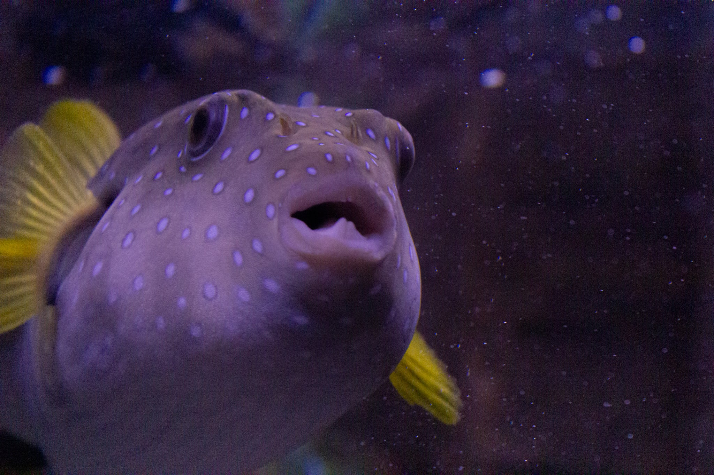

Home Page
Facts with food
Facts with swimming
Facts with where they live
Facts with how small to big they are
Fish live all around the world in nearly all bodies of water, from the deep ocean to high-altitude lakes and even some underground caves, inhabiting diverse environments like coral reefs, rivers, and polar seas. However, different species are adapted to specific conditions, and most cannot survive in extremely high-salinity water, such as the Great Salt Lake.
